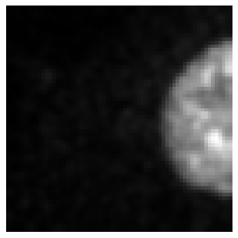
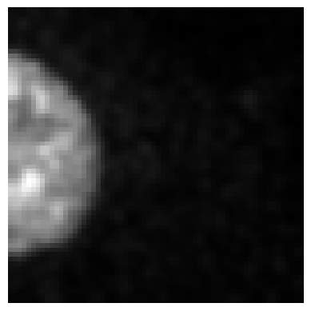
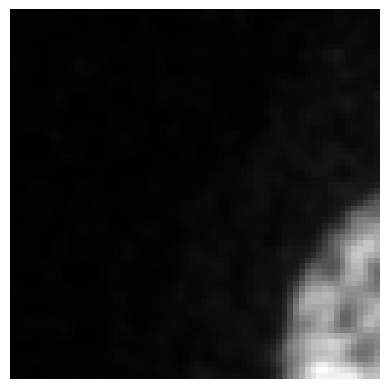

a = BioImage.create('./data_examples/example_tiff.tiff')
print(a.shape)torch.Size([1, 96, 512, 512])The module introduces specialized classes to represent various bioimaging data structures, facilitating seamless integration with machine learning workflows.
def MetaResolver(
args:VAR_POSITIONAL, kwargs:VAR_KEYWORD
):
The MetaResolver class addresses metaclass conflicts, ensuring compatibility across different data structures. This is particularly useful when integrating with libraries that have specific metaclass requirements.
BioImageBase is a function that acts as a base class for biomedical images. It can be used for many things, such as loading image data as PyTorch tensors, displaying 2D slices of 3D images and making transformations on medical images.
def BioImageBase(
x, affine:torch.Tensor | None=None, meta:dict | None=None, applied_operations:list | None=None,
_args:VAR_POSITIONAL, _kwargs:VAR_KEYWORD
)->None:
Serving as the foundational class for bioimaging data, BioImageBase provides core functionalities for image handling. It ensures that instances of specified types are appropriately cast to this class, maintaining consistency in data representation.
Metaclass casts x to this class if it is of type cls._bypass_type.
BioImage is a specialization of BioImageBase that is specifically used for 2D and 3D biomedical images. To do so, it directly inherits from that class and then squeezes the image data and allows for transformations to be made there.
def BioImage(
x, affine:torch.Tensor | None=None, meta:dict | None=None, applied_operations:list | None=None,
_args:VAR_POSITIONAL, _kwargs:VAR_KEYWORD
)->None:
A subclass of BioImageBase, the BioImage class is tailored for handling both 2D and 3D image objects. It offers methods to load images from various formats and provides access to image properties such as shape and dimensions.
a = BioImage.create('./data_examples/example_tiff.tiff')
print(a.shape)torch.Size([1, 96, 512, 512])
def BioImageStack(
x, affine:torch.Tensor | None=None, meta:dict | None=None, applied_operations:list | None=None,
_args:VAR_POSITIONAL, _kwargs:VAR_KEYWORD
)->None:
Designed for 3D image data, BioImageStack extends BioImageBase to manage volumetric images effectively. It includes functionalities for slicing, visualization, and manipulation of 3D data.
a = BioImageStack.create('./data_examples/example_tiff.tiff', roi=(0, 10))
print(a.shape)torch.Size([1, 10, 512, 512])
def BioImageProject(
x, affine:torch.Tensor | None=None, meta:dict | None=None, applied_operations:list | None=None,
_args:VAR_POSITIONAL, _kwargs:VAR_KEYWORD
)->None:
The BioImageProject class represents a 3D image stack as a 2D image using maximum intensity projection. This is particularly useful for visualizing volumetric data in a 2D format, aiding in quick assessments and presentations.
a = BioImageProject.create('./data_examples/example_tiff.tiff', roi=(0, 10))
a.shapetorch.Size([1, 512, 512])
def BioImageMulti(
x, affine:torch.Tensor | None=None, meta:dict | None=None, applied_operations:list | None=None,
_args:VAR_POSITIONAL, _kwargs:VAR_KEYWORD
)->None:
For multi-channel 2D images, BioImageMulti extends BioImageBase to handle data with multiple channels, such as different fluorescence markers in microscopy images.
def Tensor2BioImage(
cls:BioImageBase=BioImageStack
):
The Tensor2BioImage transform converts tensors into BioImageBase instances, enabling the application of bioimaging-specific methods to tensor data. This is essential for integrating deep learning models with bioimaging workflows.
To facilitate seamless integration between tensors and bioimaging data structures, the module provides conversion utilities.
def Tensor2BioImage(
cls:BioImageBase=BioImageStack
):
The Tensor2BioImage transform converts tensors into BioImageBase instances, enabling the application of bioimaging-specific methods to tensor data. This is essential for integrating deep learning models with bioimaging workflows.
The module offers classes to construct data blocks and data loaders, streamlining the preparation of datasets for machine learning models.
BioImageBlock Creates a new type of TransformBlock specifically for bioimaging data aside from other types like ImageBlock, CategoryBlock and TextBlock.
def BioImageBlock(
cls:BioImageBase=BioImage
):
A TransformBlock tailored for bioimaging data, BioImageBlock facilitates the creation of data processing pipelines, including transformations and augmentations specific to bioimaging.
The BioDataBlock class is built on top of the DataBlock’s class which is provided by the fastai library and is used to build datasets and dataloaders from blocks specifically for biomedical data, offering additionally the option to use BioImageBlock as TransformBlock.
def BioDataBlock(
blocks:list=(<fastai.data.block.TransformBlock object at 0x7c034f6e4410>, <fastai.data.block.TransformBlock object at 0x7c034f2bf2d0>), # One or more `TransformBlock`s
dl_type:TfmdDL=None, # Task specific `TfmdDL`, defaults to `block`'s dl_type or`TfmdDL`
get_items:function=get_image_files, get_y:NoneType=None, get_x:NoneType=None,
getters:list=None, # Getter functions applied to results of `get_items`
n_inp:int=None, # Number of inputs
item_tfms:list=None, # `ItemTransform`s, applied on an item
batch_tfms:list=None, # `Transform`s or `RandTransform`s, applied by batch
kwargs:VAR_KEYWORD
):
The BioDataBlock class serves as a generic container to build Datasets and DataLoaders efficiently. It integrates item and batch transformations, getters, and splitters, simplifying the setup of data pipelines for training and validation.
The BioDataLoaders class is built on top of fastai’s DataLoaders class, and wraps various data loading methods as well as the use of BioImageBlock as TransformBlock
def BioDataLoaders(
loaders:VAR_POSITIONAL, # `DataLoader` objects to wrap
path:str | Path='.', # Path to store export objects
device:NoneType=None, # Device to put `DataLoaders`
):
Basic wrapper around several DataLoaders with factory methods for biomedical imaging problems. Managing multiple DataLoader instances, BioDataLoaders handles data loading for different phases of model training, such as training, validation, and testing. It ensures efficient data handling and supports various batch processing strategies.
def from_source(
data_source, # The source of the data to be loaded by the dataloader. This can be any type that is compatible with the dataloading method specified in kwargs (e.g., paths, datasets).
show_summary:bool=False, # If True, print a summary of the BioDataBlock after creation.
path:str | Path='.', # Path to put in `DataLoaders`
bs:int=64, # Size of batch
val_bs:int=None, # Size of batch for validation `DataLoader`
shuffle:bool=True, # Whether to shuffle data
device:NoneType=None, # Device to put `DataLoaders`
):
Create and return a DataLoader from a BioDataBlock using provided keyword arguments.
Returns a DataLoader: A PyTorch DataLoader object populated with the data from the BioDataBlock. If show_summary is True, it also prints a summary of the datablock after creation.
def from_folder(
path, # Path to put in `DataLoaders`
get_target_fn, train:str='train', valid:str='valid', valid_pct:NoneType=None, seed:NoneType=None,
item_tfms:NoneType=None, batch_tfms:NoneType=None, img_cls:MetaResolver=BioImage,
target_img_cls:MetaResolver=BioImage, get_items:NoneType=None,
show_summary:bool=False, # If True, print a summary of the BioDataBlock after creation.
bs:int=64, # Size of batch
val_bs:int=None, # Size of batch for validation `DataLoader`
shuffle:bool=True, # Whether to shuffle data
device:NoneType=None, # Device to put `DataLoaders`
):
Create from dataset in path with train and valid subfolders (or provide valid_pct)
def from_df(
df, path:str='.', # Path to put in `DataLoaders`
valid_pct:float=0.2, seed:NoneType=None, fn_col:int=0, folder:NoneType=None, pref:NoneType=None, suff:str='',
target_col:int=1, target_folder:NoneType=None, target_suff:str='', valid_col:NoneType=None,
item_tfms:NoneType=None, batch_tfms:NoneType=None, img_cls:MetaResolver=BioImage,
target_img_cls:MetaResolver=BioImage,
show_summary:bool=False, # If True, print a summary of the BioDataBlock after creation.
bs:int=64, # Size of batch
val_bs:int=None, # Size of batch for validation `DataLoader`
shuffle:bool=True, # Whether to shuffle data
device:NoneType=None, # Device to put `DataLoaders`
):
Create from df using fn_col and target_col
def from_csv(
path, # Path to put in `DataLoaders`
csv_fname:str='train.csv', header:str='infer', delimiter:NoneType=None, quoting:int=0, valid_pct:float=0.2,
seed:NoneType=None, fn_col:int=0, folder:NoneType=None, pref:NoneType=None, suff:str='', target_col:int=1,
target_folder:NoneType=None, target_suff:str='', valid_col:NoneType=None, item_tfms:NoneType=None,
batch_tfms:NoneType=None, img_cls:MetaResolver=BioImage, target_img_cls:MetaResolver=BioImage,
show_summary:bool=False, # If True, print a summary of the BioDataBlock after creation.
bs:int=64, # Size of batch
val_bs:int=None, # Size of batch for validation `DataLoader`
shuffle:bool=True, # Whether to shuffle data
device:NoneType=None, # Device to put `DataLoaders`
):
Create from path/csv_fname using fn_col and target_col
def class_from_folder(
path, # Path to put in `DataLoaders`
train:str='train', valid:str='valid', valid_pct:NoneType=None, seed:NoneType=None, vocab:NoneType=None,
item_tfms:NoneType=None, batch_tfms:NoneType=None, img_cls:MetaResolver=BioImage,
show_summary:bool=False, # If True, print a summary of the BioDataBlock after creation.
bs:int=64, # Size of batch
val_bs:int=None, # Size of batch for validation `DataLoader`
shuffle:bool=True, # Whether to shuffle data
device:NoneType=None, # Device to put `DataLoaders`
):
Create from dataset in path with train and valid subfolders (or provide valid_pct)
def class_from_df(
df, path:str='.', # Path to put in `DataLoaders`
valid_pct:float=0.2, seed:NoneType=None, fn_col:int=0, folder:NoneType=None, suff:str='', label_col:int=1,
label_delim:NoneType=None, y_block:NoneType=None, valid_col:NoneType=None, item_tfms:NoneType=None,
batch_tfms:NoneType=None, img_cls:MetaResolver=BioImage,
show_summary:bool=False, # If True, print a summary of the BioDataBlock after creation.
bs:int=64, # Size of batch
val_bs:int=None, # Size of batch for validation `DataLoader`
shuffle:bool=True, # Whether to shuffle data
device:NoneType=None, # Device to put `DataLoaders`
):
Create from df using fn_col and label_col
def class_from_csv(
path, # Path to put in `DataLoaders`
csv_fname:str='labels.csv', header:str='infer', delimiter:NoneType=None, quoting:int=0, valid_pct:float=0.2,
seed:NoneType=None, fn_col:int=0, folder:NoneType=None, suff:str='', label_col:int=1, label_delim:NoneType=None,
y_block:NoneType=None, valid_col:NoneType=None, item_tfms:NoneType=None, batch_tfms:NoneType=None,
img_cls:MetaResolver=BioImage,
show_summary:bool=False, # If True, print a summary of the BioDataBlock after creation.
bs:int=64, # Size of batch
val_bs:int=None, # Size of batch for validation `DataLoader`
shuffle:bool=True, # Whether to shuffle data
device:NoneType=None, # Device to put `DataLoaders`
):
Create from path/csv_fname using fn_col and label_col
def class_from_lists(
path, # Path to put in `DataLoaders`
fnames, labels, valid_pct:float=0.2, seed:int=None, y_block:NoneType=None, item_tfms:NoneType=None,
batch_tfms:NoneType=None, img_cls:MetaResolver=BioImage,
show_summary:bool=False, # If True, print a summary of the BioDataBlock after creation.
bs:int=64, # Size of batch
val_bs:int=None, # Size of batch for validation `DataLoader`
shuffle:bool=True, # Whether to shuffle data
device:NoneType=None, # Device to put `DataLoaders`
):
Create from list of fnames and labels in path
def test_biodataloader(
dls:DataLoaders, test_path:str | pathlib.Path | pandas.DataFrame, with_labels:bool=True, csv_header:str='infer',
csv_delimiter:NoneType=None, csv_quoting:int=0
):
Test a DataLoader on a set of test_files and return the results as a list of tuples containing the file name and the corresponding input and target tensors.
Functions to retrieve specific data components are provided, aiding in the organization and preprocessing of datasets.
def get_images(
path:str, folders:str | list[str] | None=None, recurse:bool=True, filename_filter:Union=None
)->L:
Get image files from a list of folders or a glob expression.
def get_gt(
path_gt, # The base directory where the ground truth files are stored, or a file path from which to derive the parent directory.
gt_file_name:str='avg50.png', # The name of the ground truth file.
):
The get_gt function retrieves ground truth data, essential for supervised learning tasks. It ensures that the correct labels or annotations are associated with each data sample.
This function constructs a path to a ground truth file based on the given path_gt and gt_file_name.
It uses a lambda function to create a new path by appending gt_file_name to the parent directory of the input file, as specified by path_gt.
Returns a callable: A function that takes a single argument (a filename) and returns a Path object representing the full path to the ground truth file. When called with a filename, this function constructs the path by combining path_gt or the parent directory of the filename with gt_file_name.
The get_target function constructs and returns functions for generating file paths to “target” files based on given input parameters. This function is particularly useful for tasks where the target files are stored in a different directory or have a different naming convention compared to the input files.
def get_target(
path:str, # The base directory where the files are located. This should be a string representing an absolute or relative path.
same_filename:bool=True, # If True, the target file name will match the original file name; otherwise, it will use the specified prefix.
same_foldername:bool=False, # If True, the target folder name will match the original folder name; otherwise, it will use the specified prefix.
target_file_prefix:str='target', # The prefix to insert into the target file name if `same_filename` is False.
signal_file_prefix:str='signal', # The prefix used in the original file names that should be replaced by the target prefix.
map_foldername:bool=False, # If True, the target folder name will match the original folder name; otherwise, it will use the specified prefix.
target_folder_prefix:str='target', # The prefix to insert into the target folder name if `same_foldername` is False.
signal_folder_prefix:str='signal', # The prefix used in the original folder names that should be replaced by the target prefix.
relative_path:bool=False, # If True, it indicates that the path is relative to the parent folder in the path where the input files are located.
):
Constructs and returns functions for generating file paths to “target” files based on given input parameters.
This function defines two nested helper functions within its scope:
- `construct_target_filename(file_name)`: Constructs a target file name by inserting the specified prefix into the original file name.
- `generate_target_path(file_name)`: Generates a path to the target file based on whether `same_filename` is set to True or False.The main function returns the appropriate helper function based on the value of same_filename.
Returns a callable: A function that takes a file name as input and returns its corresponding target file path based on the specified parameters.
The function get_target can be used to look for target files in different folders using either absolute or relative paths:
print(get_target('train_folder/target', same_filename=False)('../signal/signal01.tif'))
print(get_target('target', relative_path=True)('../train_folder/signal/image01.tif'))train_folder/target/target01.tif
../train_folder/target/image01.tif…and it can look for target files with different names but same numbering:
print(get_target('GT', relative_path=True, same_filename=False, target_file_prefix="image_clean", signal_file_prefix="image_noisy")('train_folder/signal/image_noisy_01.tif'))train_folder/GT/image_clean_01.tifIt also supports more general cases:
print(get_target('GT', relative_path=True, same_filename=False, target_file_prefix="clean", signal_file_prefix="noisy")('train_folder/signal/01_image_noisy_dataset.tif'))train_folder/GT/01_image_clean_dataset.tifprint(get_target('', relative_path=True, map_foldername=True, target_folder_prefix="GT", signal_folder_prefix="signal")('train_folder/signal_01/01_1.tif'))train_folder/GT_01/01_1.tifFor tasks involving unsupervised denoising or noise analysis, get_noisy_pair retrieves pairs of noisy data, enabling the training of models such as N2N.
def get_noisy_pair(
fn
):
Get another “noisy” version of the input file by selecting a file from the same directory.
This function first retrieves all image files in the directory of the input file fn (excluding subdirectories). It then selects one of these files at random, ensuring that it is not the original file itself to avoid creating a trivial “noisy” pair.
Parameters:
fn (Path or str): The path to the original image file. This should be a Path object but accepts string inputs for convenience.Returns:
Path: A Path object pointing to the selected noisy file.Visualization functions are included to display batches of data and model results, aiding in qualitative assessments and debugging.
show_batch (x:BioImageBase, y:BioImageBase, samples, ctxs=None, max_n:int=10, nrows:int=None, ncols:int=None, figsize:tuple=None, **kwargs)
The show_batch function visualizes a batch of data samples, allowing users to inspect the input data and verify preprocessing steps.
Returns: List[Context]: A list of contexts after displaying the images and labels.
| Type | Default | Details | |
|---|---|---|---|
| x | BioImageBase | The input image data. | |
| y | BioImageBase | The target label data. | |
| samples | List of sample indices to display. | ||
| ctxs | NoneType | List of contexts for displaying images. If None, create new ones using get_grid(). |
|
| max_n | int | 10 | Maximum number of samples to display. |
| nrows | int | None | Number of rows in the grid if ctxs are not provided. |
| ncols | int | None | Number of columns in the grid if ctxs are not provided. |
| figsize | tuple | None | Figure size for the image display. |
| kwargs | Additional keyword arguments. |
show_results (x: BioImageBase, y: BioImageBase, samples, outs, ctxs=None, max_n=10, figsize=None, **kwargs)
After model inference, show_results displays the model’s predictions alongside the ground truth, facilitating the evaluation of model performance.
Returns:
List[Context]: A list of contexts after displaying the images and labels.
| Type | Default | Details | |
|---|---|---|---|
| x | BioImageBase | The input image data. | |
| y | BioImageBase | The target label data. | |
| samples | List of sample indices to display. | ||
| outs | List of output predictions corresponding to the samples. | ||
| ctxs | NoneType | List of contexts for displaying images. If None, create new ones using get_grid(). |
|
| max_n | int | 10 | |
| figsize | tuple | None | Figure size for the image display. |
| kwargs | Additional keyword arguments. |
The module provides functions for data preprocessing, including patch extraction and dimensionality reduction, essential for preparing data for machine learning models.
def extract_patches(
data, # numpy array of the input data (n-dimensional).
patch_size, # tuple of integers defining the size of the patches in each dimension.
overlap, # float (between 0 and 1) indicating overlap between patches.
):
Extracts n-dimensional patches from the input data.
Returns: - A list of patches as numpy arrays.
The extract_patches function divides images into smaller patches, which is useful for training models on localized regions of interest, especially when dealing with high-resolution images.
data = np.random.rand(100, 100, 3) # Example 3D data
patch_size = (64,64,2)
overlap = 0.5
patches = extract_patches(data, patch_size, overlap)
print("Number of generated patches:", len(patches))
patches[0].shapeNumber of generated patches: 8(64, 64, 2)
def save_patches_grid(
data_paths, # Path to folder or list of paths to data files (n-dimensional data).
gt_paths, # Path to folder or list of paths to ground truth (gt) files (n-dimensional data).
output_folder, # Path to the folder where the HDF5 files will be saved.
patch_size, # tuple of integers defining the size of the patches.
overlap, # float (between 0 and 1) defining the overlap between patches.
use_parent_folder:bool=False, # If True, use the parent folder name of the input files for naming the output HDF5 files.
threshold:NoneType=None, # If provided, patches with a mean value below this threshold will be discarded.
squeeze_input:bool=True, # If True, squeeze the input data to remove single-dimensional entries.
squeeze_patches:bool=False, # If True, squeeze the patches to remove single-dimensional entries.
csv_output:bool=True, # If True, a CSV file listing all patch paths is created.
split_dataset:bool=True, # Split dataset into train and test CSV files (e.g., 0.8 for 80% train).
tfms_before:Optional=None, # List of transforms to apply before extracting patches.
tfms_after:Optional=None, # List of transforms to apply after extracting patches.
kwargs:VAR_KEYWORD
):
Loads n-dimensional data from data_paths and gt_paths, generates patches, and saves them into individual HDF5 files. Each HDF5 file will have datasets with the structure X/patch_idx and y/patch_idx.
Parameters: - data_paths: Can be a folder path (string) or a list of file paths to data files - gt_paths: Can be a folder path (string) or a list of file paths to ground truth files
After extracting patches, save_patches_grid saves them in a grid format, facilitating visualization and inspection of the patches.
from bioMONAI.transforms import Blurdata_paths = './data_examples/Confocal_BPAE_B'
# For the sake of simplicity, in this example we use the same folder for ground truth
gt_paths = './data_examples/Confocal_BPAE_B'
output_folder = './_test'
patch_size = (64,64)
overlap = 0
save_patches_grid(data_paths, gt_paths, output_folder, patch_size, overlap, squeeze_input=True, tfms_after=[Blur(ksize=15)])Processing files: 0%| | 0/2 [00:00<?, ?it/s]/tmp/ipykernel_2847435/307293215.py:57: DeprecationWarning: __array__ implementation doesn't accept a copy keyword, so passing copy=False failed. __array__ must implement 'dtype' and 'copy' keyword arguments. To learn more, see the migration guide https://numpy.org/devdocs/numpy_2_0_migration_guide.html#adapting-to-changes-in-the-copy-keyword
data = np.array(image_reader(data_file_path))
/tmp/ipykernel_2847435/307293215.py:58: DeprecationWarning: __array__ implementation doesn't accept a copy keyword, so passing copy=False failed. __array__ must implement 'dtype' and 'copy' keyword arguments. To learn more, see the migration guide https://numpy.org/devdocs/numpy_2_0_migration_guide.html#adapting-to-changes-in-the-copy-keyword
gt = np.array(image_reader(gt_file_path))
Processing files: 100%|██████████| 2/2 [00:00<00:00, 11.77it/s]Train set saved to './_test/patches_train.csv'.
Test set saved to './_test/patches_test.csv'.
'is_valid' column added to './_test/patches_train.csv' for validation samples.from bioMONAI.io import hdf5_reader, split_hdf_path
from bioMONAI.visualize import plot_imagefile_path = './_test/HV110_P0500510000.h5/X/1'
im , _ = hdf5_reader()(file_path)
plot_image(im)
file_path = './_test/HV110_P0500510000.h5/y/1'
im , _ = hdf5_reader()(file_path)
plot_image(im)
from bioMONAI.core import apply_transforms
from bioMONAI.transforms import Blur, RandFlip# List of transformations defined from the bioMONAI transforms module
transforms_list = [
Blur(ksize=15, prob=1.0),
RandFlip(prob=1.0, spatial_axis=1, ndim=2)
]data_paths = './data_examples/Confocal_BPAE_B'
# For the sake of simplicity, in this example we use the same folder for ground truth
gt_paths = './data_examples/Confocal_BPAE_B'
output_folder = './_test_tfms'
patch_size = (64,64)
overlap = 0
save_patches_grid(data_paths, gt_paths, output_folder, patch_size, overlap, squeeze_input=True, tfms_after=transforms_list)Processing files: 0%| | 0/2 [00:00<?, ?it/s]/tmp/ipykernel_2847435/307293215.py:57: DeprecationWarning: __array__ implementation doesn't accept a copy keyword, so passing copy=False failed. __array__ must implement 'dtype' and 'copy' keyword arguments. To learn more, see the migration guide https://numpy.org/devdocs/numpy_2_0_migration_guide.html#adapting-to-changes-in-the-copy-keyword
data = np.array(image_reader(data_file_path))
/tmp/ipykernel_2847435/307293215.py:58: DeprecationWarning: __array__ implementation doesn't accept a copy keyword, so passing copy=False failed. __array__ must implement 'dtype' and 'copy' keyword arguments. To learn more, see the migration guide https://numpy.org/devdocs/numpy_2_0_migration_guide.html#adapting-to-changes-in-the-copy-keyword
gt = np.array(image_reader(gt_file_path))
Processing files: 100%|██████████| 2/2 [00:00<00:00, 16.50it/s] Train set saved to './_test_tfms/patches_train.csv'.
Test set saved to './_test_tfms/patches_test.csv'.
'is_valid' column added to './_test_tfms/patches_train.csv' for validation samples.file_path = './_test_tfms/HV110_P0500510000.h5/X/1'
im , _ = hdf5_reader()(file_path)
plot_image(im)
def extract_random_patches(
data_tuple, # tuple of numpy arrays (input data, ground truth data).
patch_size, # tuple of integers defining the size of the patches in each dimension.
num_patches, # number of random patches to extract.
):
Extracts a specified number of random n-dimensional patches from the input data and ground truth data.
Returns: - A tuple of lists containing randomly cropped patches as numpy arrays (input_patches, gt_patches).
def save_patches_random(
data_paths, # Path to folder or list of paths to data files (n-dimensional data).
gt_paths, # Path to folder or list of paths to ground truth (gt) files (n-dimensional data).
output_folder, # Path to the folder where the HDF5 files will be saved.
patch_size, # tuple of integers defining the size of the patches.
num_patches, # number of random patches to extract per file.
threshold:NoneType=None, # If provided, patches with a mean value below this threshold will be discarded.
squeeze_input:bool=True, # If True, squeezes singleton dimensions in the input data.
squeeze_patches:bool=False, # If True, squeezes singleton dimensions in the patches.
csv_output:bool=True, # If True, a CSV file listing all patch paths is created.
train_test_split_ratio:float=0.8, # Ratio of data to split into train and test CSV files (e.g., 0.8 for 80% train).
tfms_before:List=None, # List of transforms to apply before extracting patches.
tfms_after:List=None, # List of transforms to apply after extracting patches.
):
Loads n-dimensional data from data_folder and gt_folder, generates random patches, and saves them into individual HDF5 files. Each HDF5 file will have datasets with the structure X/patch_idx and y/patch_idx.
data_paths = './data_examples/Confocal_BPAE_B'
gt_paths = './data_examples/Confocal_BPAE_B'
output_folder = './_test2'
patch_size = (64,64)
num_patches= 2
save_patches_random(data_paths, gt_paths, output_folder, patch_size, num_patches, squeeze_input=True, tfms_before=[Blur(ksize=15)])Processing files: 0%| | 0/2 [00:00<?, ?it/s]/tmp/ipykernel_2847435/778607178.py:52: DeprecationWarning: __array__ implementation doesn't accept a copy keyword, so passing copy=False failed. __array__ must implement 'dtype' and 'copy' keyword arguments. To learn more, see the migration guide https://numpy.org/devdocs/numpy_2_0_migration_guide.html#adapting-to-changes-in-the-copy-keyword
data = np.array(image_reader(data_file_path))
/tmp/ipykernel_2847435/778607178.py:53: DeprecationWarning: __array__ implementation doesn't accept a copy keyword, so passing copy=False failed. __array__ must implement 'dtype' and 'copy' keyword arguments. To learn more, see the migration guide https://numpy.org/devdocs/numpy_2_0_migration_guide.html#adapting-to-changes-in-the-copy-keyword
gt = np.array(image_reader(gt_file_path))
Processing files: 100%|██████████| 2/2 [00:00<00:00, 23.92it/s]CSV files saved to: ./_test2/train_patches.csv and ./_test2/test_patches.csvfile_path = './_test2/HV110_P0500510000_random_patches.h5/X/1'
im , _ = hdf5_reader()(file_path)
plot_image(im)
file_path = './_test2/HV110_P0500510000_random_patches.h5/y/1'
im , _ = hdf5_reader()(file_path)
plot_image(im)
def dict2string(
d, # The dictionary to convert.
item_sep:str='_', # The separator between dictionary items (default is ", ").
key_value_sep:str='', # The separator between keys and values (default is ": ").
pad_zeroes:NoneType=None, # The minimum width for integer values, padded with zeros. If None, no padding is applied.
):
Transforms a dictionary into a string with customizable separators and optional zero padding for integers.
Returns the formatted dictionary as a string.
my_dict = {'C': 2, 'Z': 30, 'S': 1}
result = dict2string(my_dict, pad_zeroes=3)
print(result)C002_Z030_S001
def remove_singleton_dims(
substack, # The extracted substack data.
order, # The dimension order string (e.g., 'CZYX').
):
Remove dimensions with a size of 1 from both the substack and the order string.
Returns:
substack (np.array): The substack with singleton dimensions removed.
new_order (str): The updated dimension order string.
def extract_substacks(
input_file, # Path to the input OME-TIFF file.
output_dir:NoneType=None, # Directory to save the extracted substacks. If a list, the substacks will be saved in the corresponding subdirectories from the list.
indices:NoneType=None, # A dictionary specifying which indices to extract. Keys can include 'C' for channel, 'Z' for z-slice, 'T' for time point, and 'S' for scene. If None, all indices are extracted.
split_dimension:NoneType=None, # Dimension to split substacks along. If provided, separate substacks will be generated for each index in the split_dimension. Must be one of the keys in indices.
squeeze_dims:bool=True, # Dimension to squeeze substacks along.
kwargs:VAR_POSITIONAL
):
Extract substacks from a multidimensional OME-TIFF stack using AICSImageIO.
output_dir = "./_test_folder/"
subdirs = [output_dir + folder for folder in ["channel_0", "channel_1", "channel_2"]]
subdirs['./_test_folder/channel_0',
'./_test_folder/channel_1',
'./_test_folder/channel_2'][os.path.join([output_dir][0], f"{subdirs[0]}_{ii}") for ii in range(2)]['./_test_folder/./_test_folder/channel_0_0',
'./_test_folder/./_test_folder/channel_0_1']filename = './data_examples/2155a4fe_3500000635_100X_20170227_E08_P21.ome.tiff'
# This extracts a single substack for channel 0, z-slice 5, and time point 0.
extract_substacks(filename, output_dir=output_dir, indices={"C": 0, "Z": range(35), "T": 0})Attempted file (/home/biagio/bioMONAI/nbs/data_examples/2155a4fe_3500000635_100X_20170227_E08_P21.ome.tiff) load with reader: <class 'bioio_ome_tiff.reader.Reader'> failed with error: bioio-ome-tiff does not support the image: '/home/biagio/bioMONAI/nbs/data_examples/2155a4fe_3500000635_100X_20170227_E08_P21.ome.tiff'. Failed to parse XML for the provided file. Error: not well-formed (invalid token): line 1, column 6
Attempted file (/home/biagio/bioMONAI/nbs/data_examples/2155a4fe_3500000635_100X_20170227_E08_P21.ome.tiff) load with reader: <class 'bioio_ome_tiff.reader.Reader'> failed with error: bioio-ome-tiff does not support the image: '/home/biagio/bioMONAI/nbs/data_examples/2155a4fe_3500000635_100X_20170227_E08_P21.ome.tiff'. Failed to parse XML for the provided file. Error: not well-formed (invalid token): line 1, column 6
The image ends with .ome.tiff, which might indicate an OME-TIFF file format. You might want to install the `bioio-ome-tiff` plug-in for improved metadata Processing.You can also use 'bioio.plugin_feasibility_report(image)' method to check if a specific image can be handled by the available plugins.Extracted substack saved to: ./_test_folder/2155a4fe_3500000635_100X_20170227_E08_P21_substack_C0_Zrange(0, 35)_T0.ome.tiff# This extracts substacks for each channel (`C`) and saves them in separate subfolders named "C_0", "C_1", "C_2", etc.
extract_substacks(filename, output_dir=[output_dir], indices={"C": [0, 1, 2], "Z": 5, "T": 0}, split_dimension="C")Attempted file (/home/biagio/bioMONAI/nbs/data_examples/2155a4fe_3500000635_100X_20170227_E08_P21.ome.tiff) load with reader: <class 'bioio_ome_tiff.reader.Reader'> failed with error: bioio-ome-tiff does not support the image: '/home/biagio/bioMONAI/nbs/data_examples/2155a4fe_3500000635_100X_20170227_E08_P21.ome.tiff'. Failed to parse XML for the provided file. Error: not well-formed (invalid token): line 1, column 6
Attempted file (/home/biagio/bioMONAI/nbs/data_examples/2155a4fe_3500000635_100X_20170227_E08_P21.ome.tiff) load with reader: <class 'bioio_ome_tiff.reader.Reader'> failed with error: bioio-ome-tiff does not support the image: '/home/biagio/bioMONAI/nbs/data_examples/2155a4fe_3500000635_100X_20170227_E08_P21.ome.tiff'. Failed to parse XML for the provided file. Error: not well-formed (invalid token): line 1, column 6
The image ends with .ome.tiff, which might indicate an OME-TIFF file format. You might want to install the `bioio-ome-tiff` plug-in for improved metadata Processing.You can also use 'bioio.plugin_feasibility_report(image)' method to check if a specific image can be handled by the available plugins.Extracted substack saved to: ./_test_folder/C_0/2155a4fe_3500000635_100X_20170227_E08_P21_substack_C0_Z5_T0.ome.tiff
Extracted substack saved to: ./_test_folder/C_1/2155a4fe_3500000635_100X_20170227_E08_P21_substack_C1_Z5_T0.ome.tiff
Extracted substack saved to: ./_test_folder/C_2/2155a4fe_3500000635_100X_20170227_E08_P21_substack_C2_Z5_T0.ome.tiff# This extracts substacks for each channel and saves them in directories "channel_0", "channel_1", and "channel_2".
extract_substacks(filename, output_dir=subdirs, indices={"C": [0, 1, 2], "Z": 5}, split_dimension="C")Attempted file (/home/biagio/bioMONAI/nbs/data_examples/2155a4fe_3500000635_100X_20170227_E08_P21.ome.tiff) load with reader: <class 'bioio_ome_tiff.reader.Reader'> failed with error: bioio-ome-tiff does not support the image: '/home/biagio/bioMONAI/nbs/data_examples/2155a4fe_3500000635_100X_20170227_E08_P21.ome.tiff'. Failed to parse XML for the provided file. Error: not well-formed (invalid token): line 1, column 6
Attempted file (/home/biagio/bioMONAI/nbs/data_examples/2155a4fe_3500000635_100X_20170227_E08_P21.ome.tiff) load with reader: <class 'bioio_ome_tiff.reader.Reader'> failed with error: bioio-ome-tiff does not support the image: '/home/biagio/bioMONAI/nbs/data_examples/2155a4fe_3500000635_100X_20170227_E08_P21.ome.tiff'. Failed to parse XML for the provided file. Error: not well-formed (invalid token): line 1, column 6
The image ends with .ome.tiff, which might indicate an OME-TIFF file format. You might want to install the `bioio-ome-tiff` plug-in for improved metadata Processing.You can also use 'bioio.plugin_feasibility_report(image)' method to check if a specific image can be handled by the available plugins.Extracted substack saved to: ./_test_folder/channel_0/2155a4fe_3500000635_100X_20170227_E08_P21_substack_C0_Z5.ome.tiff
Extracted substack saved to: ./_test_folder/channel_1/2155a4fe_3500000635_100X_20170227_E08_P21_substack_C1_Z5.ome.tiff
Extracted substack saved to: ./_test_folder/channel_2/2155a4fe_3500000635_100X_20170227_E08_P21_substack_C2_Z5.ome.tiff